GitHub로 팀 프로젝트 관리하는 방법
- 작성자 : 황유진
-
글 작성 도움 : 오은현
- GitHub로 팀 프로젝트를 처음 진행할 때의 막막함을 덜고 나 스스로도 사용법을 정리하기 위해 작성한 글이다.
- 함께 참고하면 좋은 글
- Feature Branch Workflow
🎬 시작 전에 팀장이 할 일
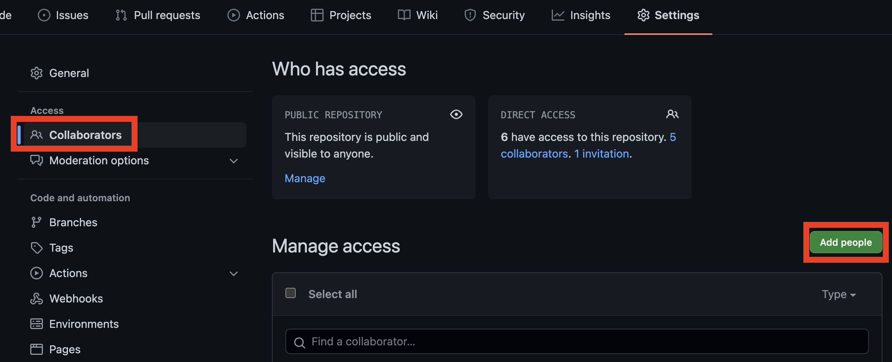
- 새 프로젝트용 레포지토리 생성 후 함께 할 팀원들의 GitHub 메일 주소를
Collaborator에 추가한다.
팀원들이 팀 레포지토리에 참여하기
- 메일로
Collaborator초대를 받은 뒤Accept invitation을 눌러 수락하면 내 레포지토리 목록에 자동으로 추가된다. - [Git]GitHub Collaborator 추가하기
-
그림과 함께 보고 싶으면 위 링크 참고
- ❗️ 참고로
Collaborator로 참여하면 내 레포지토리 목록에는 보이지 않는다.

- 팀장의 레포지토리 상단에서
pin을 클릭하면 즐겨찾기에 추가된다.

- 내 GitHub 프로필 메인으로 가면 아까
pin했던 레포지토리 목록을 볼 수 있다. 이걸로 원격저장소에 찾아오면 된다. - 원격저장소는 하나만 존재하고 이걸 내 컴퓨터로 다운받아서 로컬저장소에서 각자 작업한 후에 원격저장소로 합치는 개념이다.
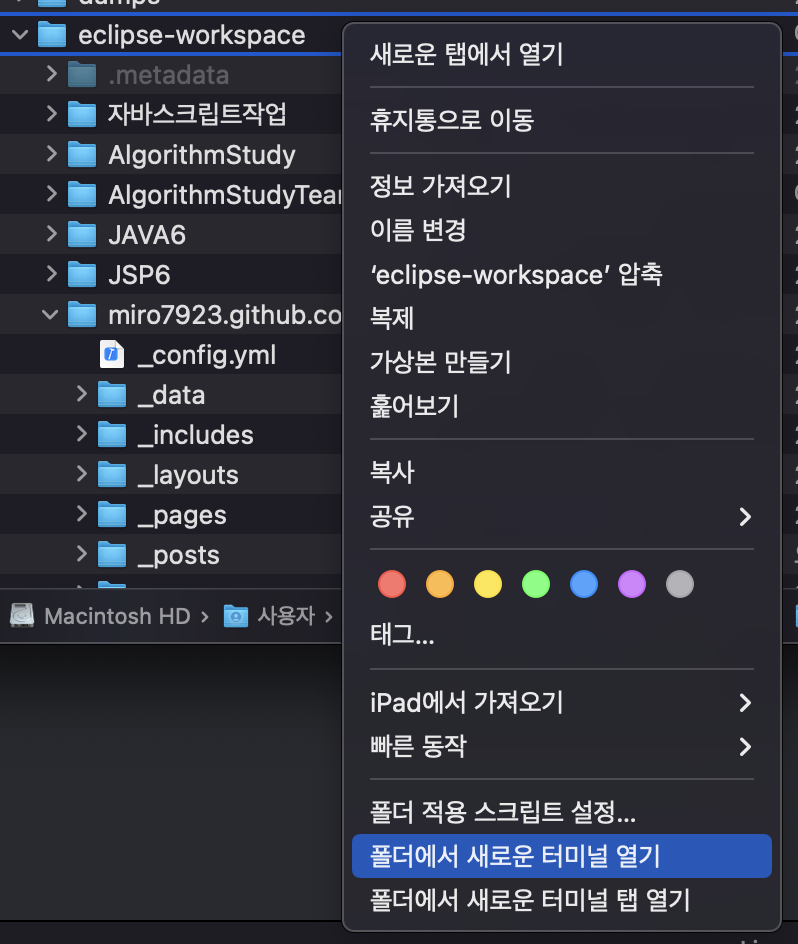
- [맥 OS 기준] 레포지토리를 다운받을 폴더를 선택한 뒤
폴더에서 새로운 터미널 열기를 선택하거나 - [윈도우 OS 기준] 윈도우 탐색기를 열어서 다운받을 폴더로 이동한 뒤 해당 폴더의 주소를 복사한다. 그 다음
cmd(명령 프롬프트)를 켜서
cd 아까 복사한 폴더 경로
- 위 명령어를 입력한 후 엔터를 누르면 해당 폴더로 이동할 수 있다.
- 이제 아까전에 자동으로 복사되었던 레포지토리로 다시 돌아간다.
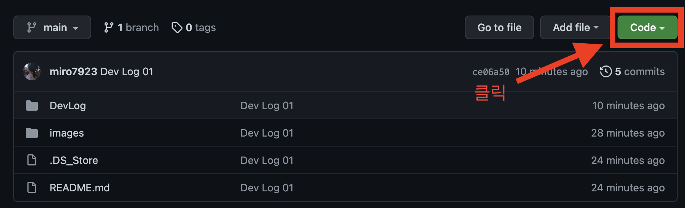
- 원격저장소에 있는 레포지토리를 내 로컬 컴퓨터로 다운받아야 한다.
- 초록색
Code버튼을 클릭하면 이 레포지토리의 주소를 볼 수 있다.

- 주소를 복사한다.
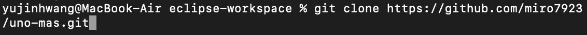
git clone 복사한 레포지토리 주소
- 위 사진처럼 명령어를 입력하고 복사한 주소를 붙여넣은 뒤 엔터를 누르면 내 컴퓨터로 레포지토리가 다운로드 된다.
- 이제 내 컴퓨터에서 작업한 파일을 레포지토리 폴더에 넣은 다음 명령어 몇 가지만 입력하면 GitHub 사이트에 있는 레포지토리(원격 저장소)로 업로드 할 수 있다.
나의 작업물을 원격 저장소에 업로드 하기
- 작업이 끝나고 나면 결과물을 합쳐야 한다.
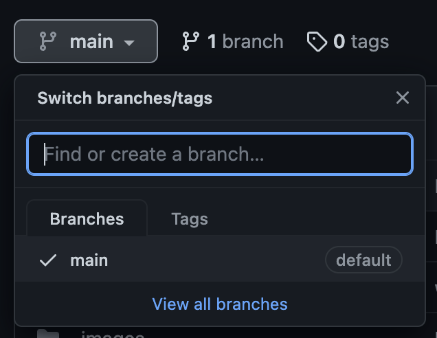
- 브랜치는 같은 저장소에서 만들어진 소규모 공간이라고 생각하면 편하다. 그 중에서 대표 공간이
main브랜치이다. 우리의 완성물은main브랜치에만 존재하게 할 것이다. - 내 작업물을 내 컴퓨터에 있는 레포지토리 폴더(로컬저장소)에 넣은 다음
main브랜치로push하면 내 작업물을 합칠 수 있는데main브랜치에는 완성물만 있어야 하기 때문에 그냥 합치면 안 되고 작업물에 문제가 없다는 것이 확인되었을 때main브랜치로 합쳐야 한다. - 그런데 그 전까지 각자 컴퓨터에 작업물을 가지고 있으면 다른 팀원과 함께 확인하는 것이 굉장히 불편하다. 내가 쓴 코드를 카톡이나 메일로 공유하지 않고 편할 때 접속할 수 있는 GitHub의 원격 저장소에서 확인할 수 있으면 훨씬 편할 것이다. 이 때 새로운 브랜치를 하나 만들어서 거기에다
push하는 것이다.(줌에서 소회의실 만들어서 몇 명씩 모여 회의하는 느낌으로…) -
그러면 다른 사람들도 새로 생긴 브랜치에
push된 내용을 GitHub의 원격 저장소에서 확인하고 코드에 댓글도 달 수 있다. 여기서 문제가 없는 것이 확인되면main브랜치로merge요청을 하면 된다. 팀장이 승낙하면main브랜치로 합쳐진다. - 이걸 하려면 먼저 내 로컬저장소가
main브랜치의 최신 버전과 동기화가 되어 있어야 한다.
내 로컬저장소 최신버전으로 업데이트
git checkout main // main branch로 이동
git pull // 내 로컬저장소의 main 브랜치를 최신버전으로 업데이트
- 원격 저장소에 업로드하기 전에 꼭 이 과정을 먼저 거친 후에 다음 과정을 진행해야 한다.
- 안 그러면 과거 버전과 충돌해서 업로드가 제대로 되지 않을 수 있다. 이렇게 되면 고치기 좀 복잡해지니까… 꼭
main브랜치 최신버전 업데이트부터 하고 시작하자!
개인용 브랜치 생성
git checkout main // main 브랜치로 이동
git checkout -b 새 브랜치 이름 // 새 브랜치 생성 후 그 브랜치로 이동

- 새 브랜치가 생성되고 바꿨다고 하는데 터미널 환경이라 이게 제대로 된건지 아닌지 알쏭달쏭할 수 있다.
git branch -a // 로컬저장소(내 컴퓨터)에 생성되어 있는 브랜치 확인
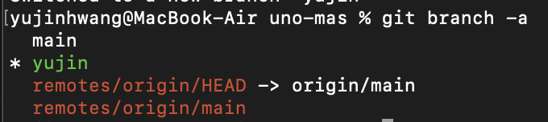
- 위 명령어를 입력해 보면 현재 내 로컬저장소에 생성된 브랜치들을 확인할 수 있다.
- 초록색 별 표시된 것이 현재 사용 중인 브랜치라는 뜻
git branch -r // 원격저장소(GitHub)에 생성되어 있는 브랜치 확인
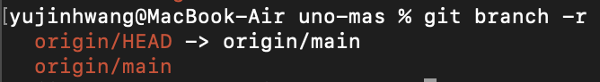
- 원격저장소에 생성되어 있는 브랜치를 확인하고 싶으면 위 명령어를 입력하면 된다.
- 아직
commit과push를 진행하지 않았기 때문에 원격저장소에는 아까 만든 브랜치가 없다.
git branch --set-upstream-to origin/main

- 새 브랜치를 만들었으면 이걸 사용해서 원격저장소에 업로드를 하겠다고 알려줘야 한다. 위 명령어를 입력하면 GitHub이 OK 하고 새 브랜치를 등록시켜 준다.
- 새 브랜치를 만들었을 때 한 번만 하면 된다.
git checkout 내 브랜치 이름
- 다음부터는 위 명령어만 입력해서 내 개인 브랜치로 바꾸면 된다.
작업물 업로드하기
- 작업물 업로드 전에
git checkout 내 브랜치 이름
- 이걸 입력해서 꼭 개인 브랜치로 바꾼 후에 업로드 하자!!!

- 이런 식으로 로컬저장소에 들어있는 파일을 수정하거나 새로 생성하면 내 로컬저장소에 있는 GitHub 폴더가 자동으로 알아차린다.
git status // 현재 로컬저장소 상태 보기
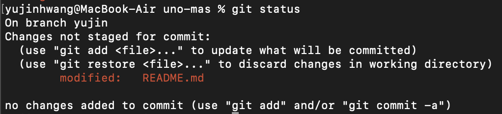
- 위 명령어를 입력하면 새롭게 추가되거나 변경된 파일 목록을 보여준다.
git add . // 로컬저장소에 있는 모든 파일 추가
git commit -m "[yujin] README 수정" // 방금 추가한 파일들 업로드 준비 - 누가 어떤 내용을 수정/추가해서 올리는지 작성
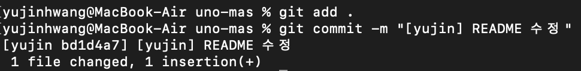
- 위 명령어들을 입력하면 원격저장소에 업로드 될 준비가 완료된다.
git push origin 내 브랜치 이름

- 위 명령어를 입력하면 드디어 원격저장소에 업로드가 된다!

- 원격저장소로 와서 보면 아깐 없었던 브랜치가 생긴 것을 볼 수 있다. 그리고 아까 수정했던 리드미 파일의 변경사항도 적용되지 않았다.

- 새로 만든 브랜치로 와 보면 아까 수정했던 내용이 적용된 것을 볼 수 있다. 브랜치를 이용하면 이런 식으로 같은 공간에서 버전을 나누어서 관리할 수 있다.
다른 팀원 코드 확인하고 피드백 댓글달기
- 팀원이 어떤 코드를 추가하고 삭제했는지 확인하고 거기에 댓글을 달 수 있다.
- 댓글을 작성하면 해당 팀원에게 댓글이 달렸다는 알림 메일이 발송된다.

- 작업물을 확인할 팀원의 브랜치로 이동한 후
commit메세지를 클릭하면 가장 최근commit내역으로 이동할 수 있다.

- 파란색 +가 보이는 자리에 마우스 오버하면 저 버튼이 생긴다. 클릭하면 댓글창이 나온다.

- 혹은 맨 아래에 있는 댓글창을 이용해서 댓글을 작성할 수도 있다.
- 각 작업물에 이렇게 피드백을 해 주자.
- 여기서 이상 없는 것이 확인 되었으면
main브랜치로 합치면 된다.
main 브랜치로 작업물 합치기

- 내 개인 브랜치로
push를 하고 나면 상단에Compare & pull request버튼이 생긴 것을 볼 수 있다.
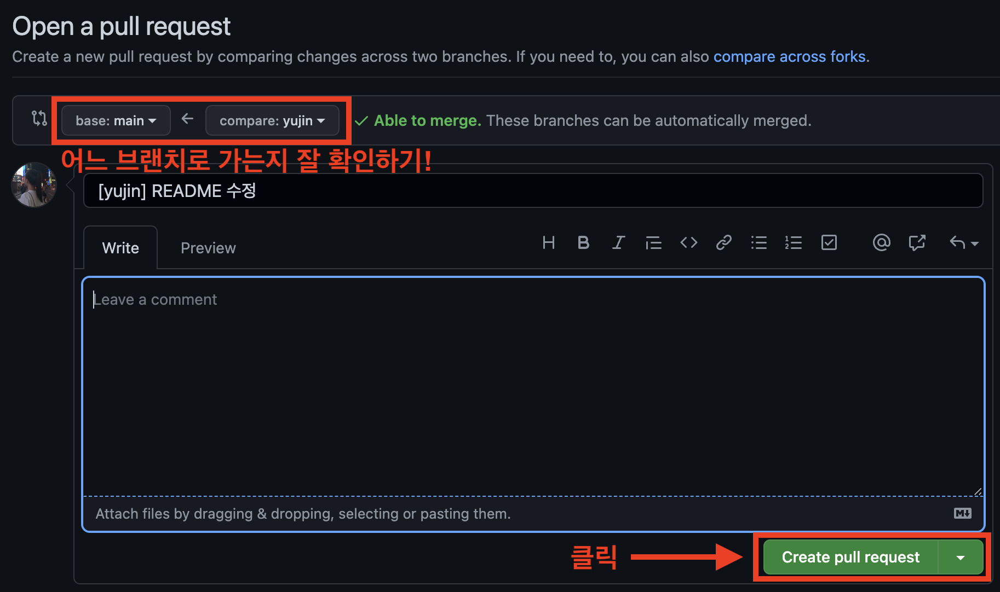
- 브랜치 화살표 방향 잘 확인한 다음
Create pull request버튼을 클릭한다. 추가로 작성할 메시지가 있다면 작성하면 된다.

- 그러면 이렇게
pull request가 작성된다. 팀장이 확인 후merge를 최종 수락하면 합치는 것이 완료된다.
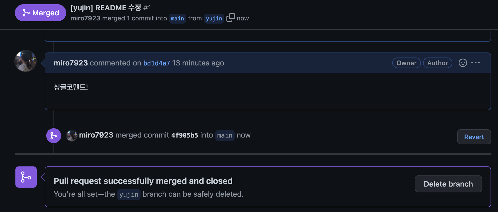

-
짠!
merge후main브랜치에 최종 반영된 것을 볼 수 있다. -
이후에 또 새로운 작업물을 업로드 해야 하면 내 로컬저장소 최신버전으로 업데이트부터 반복하면 된다.